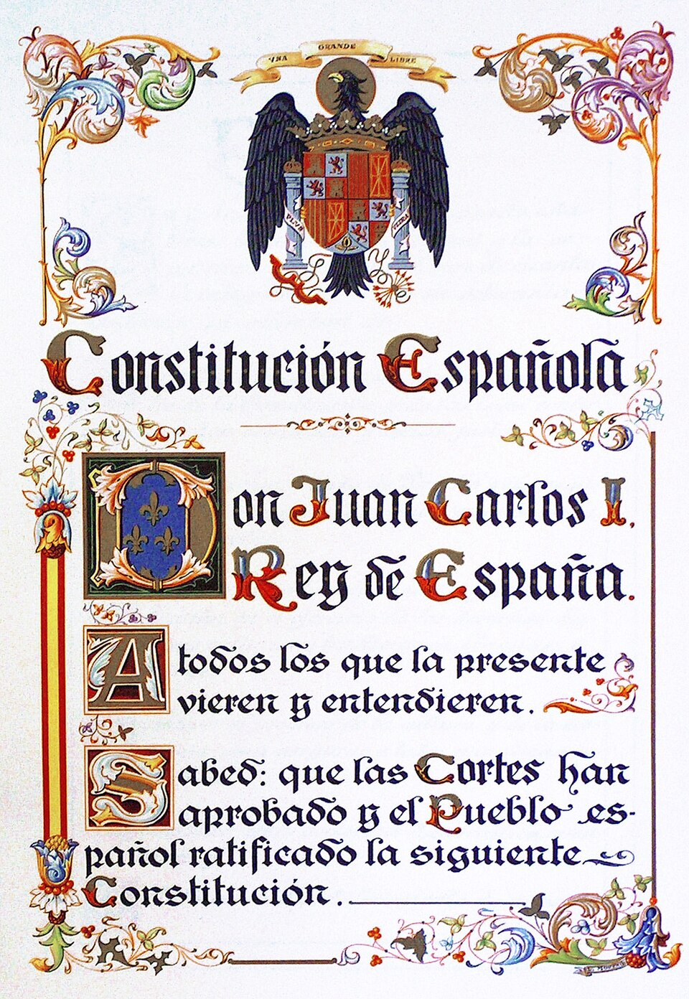

España aprueba en referéndum la Constitución del consenso
Los escrutinios atribuyen al sí en torno al 88 por ciento de los votos, con una participación del 67 por ciento. Por primera vez en cuarenta años, los españoles votan su ley fundamental. Monarquía parlamentaria, derechos y autonomías: el texto pactado por casi todos.

Desde primera hora de la mañana, con un frío seco de diciembre, las colas se formaron ante los colegios electorales de toda España. En un colegio madrileño, una anciana explicaba a quien quisiera oírla que no votaba una ley fundamental desde los tiempos de la República; a su lado, un muchacho de dieciocho años estrenaba el derecho con la papeleta doblada en la mano. La escena, repetida de Galicia a Canarias, resume la jornada: cuarenta años después, el país entero ha sido llamado a decir sí o no a una Constitución, y ha acudido a las urnas con la naturalidad de quien recupera una costumbre.
A la hora de cerrar esta edición, con el escrutinio muy avanzado, los datos dibujan un respaldo rotundo: en torno al ochenta y ocho por ciento de votos afirmativos, con una participación próxima al sesenta y siete por ciento del censo. El texto aprobado define a España como un Estado social y democrático de Derecho, establece la monarquía parlamentaria, reconoce derechos y libertades y abre la vía de las autonomías para nacionalidades y regiones. Tras la sanción del Rey y su publicación, la Constitución entrará en vigor, y España quedará dotada de una ley de leyes votada por todos y pactada entre casi todos.
Porque esa es la novedad que los historiadores tendrán que explicar: esta Constitución no la ha impuesto un partido vencedor, sino que la han negociado, línea a línea, quienes hace tres años parecían irreconciliables. UCD y PSOE, comunistas y Alianza Popular, nacionalistas y hombres del régimen anterior han cedido cada uno algo para que ninguno lo perdiera todo. La palabra que resume el método se ha gastado de tanto usarse este año, y sin embargo no hay otra: consenso. Las constituciones españolas del último siglo y medio fueron banderas de una mitad contra la otra; esta quiere ser, por primera vez, techo común.
La jornada dejó estampas para el recuerdo: ministros votando entre fotógrafos, pueblos enteros bajando en autocar a la cabecera del municipio, mesas presididas por maestros jóvenes que explicaban el rito a votantes que se lo sabían de memoria desde 1936. No todo es unanimidad, y conviene dejarlo escrito: en las provincias vascas la abstención ha sido notablemente más alta que en el resto, tras la campaña de quienes entienden que el texto no recoge sus aspiraciones. Hubo también, aquí y allá, papeletas negativas y votos en blanco. La democracia, decía anoche un escrutador veterano, se conoce en que los números no dan nunca el cien por cien.
Sería imprudente proclamar esta noche que los problemas de España quedan resueltos por ochenta y ocho papeletas de cada cien. Un texto no da trabajo, ni apacigua pistolas, ni cierra por sí solo heridas de cuarenta años. Pero algo ha cambiado de manera difícil de exagerar: por primera vez en siglo y medio, la ley fundamental no lleva el nombre de un bando. Las constituciones anteriores duraron lo que duró el poder de sus autores. Esta ha sido escrita para durar más que sus firmantes, y ese propósito, tan modesto en apariencia, es la mayor ambición política que este país se haya permitido en mucho tiempo.